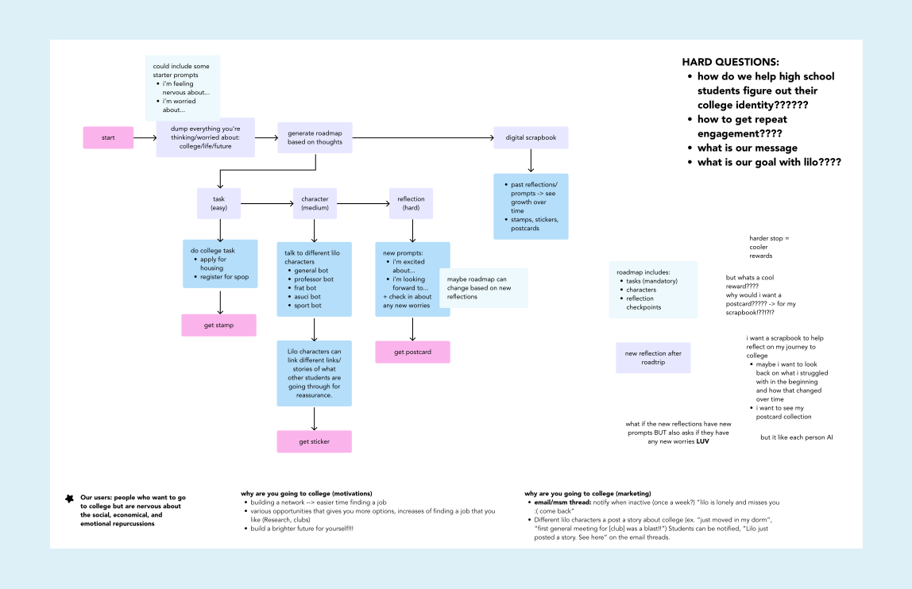

LiloBot
Project Overview
Design and Partnership Lab
Duration: 10 weeks
Role: UX Researcher
The Design Team: Karla Avalos, Minh Nguyen, Isabel Pham
Purpose: Use AI to help with more than just logistical problems, and create a more empathetic environment for new students.
Context
We are the Lilo design team from UC Irvine's Design and Partnership Lab (daplab). Our goal is to work together with community partners to make interactive learning tools and improve education. Specifically, we focus on helping students with the college enrollment process and preventing "summer melt", when accepted students decide not to attend college.
Who is Lilo?
Lilo is a chatbot that supports high school graduates with their college enrollment process through text messages. Our main goal was to address the problem of "summer melt," where accepted students decide not to go to college. We studied different factors that contribute to this, such as practical challenges like missed deadlines and paperwork, as well as the social and emotional influences that affect a student's decision to attend college.
Using natural language processing, Lilo effectively addresses a wide range of questions that students may have during the enrollment process. It has been trained with specific college information, allowing it to offer timely reminders and provide informative responses. Lilo also has features that help students think about their feelings and social worries. If students need more help, Lilo can connect them with experienced college mentors.
Problem Statement
Due to limited access to counselors, numerous students lack the necessary support to express their nervousness about transitioning to college. However, relying on chatbots to address these needs can create conflicts as chatbots primarily focus on providing resources or quick responses to inquiries, often overlooking the emotional needs of students.
How might we design an authentic chatbot that can provide highschool students a support system to express their concerns regarding the challenging transition to college?
The Design Process
Design System
We created a design system for Lilo with a goal of establishing a welcoming, playful, and relaxing atmosphere within the design. We aimed to create a minimalist and friendly experience to foster a sense of introspection and help students feel at ease while reflecting on their thoughts and feelings.
The purpose of the design system was to remain consistent throughout our design process, for a uniform look and feel. Along with updating the design system for a more cohesive look, we also updated Lilo to look and feel like a more playful robot.
.svg)
Design Systems help us identify the visual brand of our website and stay consistent
Sketches
We initially focused on creating sketches and low-fidelity wireframes for a task management dashboard that would help students track their enrollment-related tasks for college.
However, as we got a better understanding of summer melt and how to design for AI, we realized we had to consider the socioemotional aspect of the college journey. Our new goal was to focus on helping students figure out their college identity, while also creating a sense of community to help students understand they are not going through this journey alone.
With this new perspective, we went back to the drawing board to reimagine our initial sketches, transforming them into a more holistic and reflective journey towards college. Sketches were very important in our feedback process because it allowed us to give an idea of our vision without the need for full commitment in this design direction, allowing for more flexibility.
User Flow
The user flow diagrams helped to envision a new path for Lilo; one where the user is given the option of going through the chat, tasks, or reflection process in their own order. This helps navigate away from task-oriented Chat Bots, which was one of our main challenges, and helps users go at their own pace without overwhelming them. We needed to keep in mind the audience, high school students who are nervous or still unsure if they want to fully commit to college, and ensure we were providing for their possible personality types (A, B, C, D).
User flow diagram
In addition, each respective option would lead to its own reward, this would in turn keep motivating students to continue completing each portion of the subsections. We also brainstormed different ways to market Lilo and attract users through various storyboards.
Storyboards
In our updated wireframes, we created a digital road trip concept that takes students on a journey towards college. The road trip consists of multiple stops, each representing a different task aimed at alleviating worries and providing valuable information about college life.
At the start of the trip, students will be asked to reflect on what they are excited about and any concerns they might have regarding college. This input will be used to generate a personalized roadmap tailored to their specific needs and aspirations.
At each stop along the road trip, students will have the opportunity to engage in a chat with Lilo, where they can seek guidance, ask questions, or express any concerns they may have. These interactions with Lilo will provide valuable support and information to the students.
After visiting each stop, students will be encouraged to reflect once again, this time focusing on their excitement for college and any additional worries that may have arisen. This reflection process allows students to track their progress, gain confidence, and address any lingering concerns throughout their journey. In addition, using the information from this reflection, Lilo can update student’s roadmaps to fit their new concerns.
Wireframes
We made low fidelity wireframes to further envision Lilo’s direction and receive further feedback on what works and what needs to be changed.

Lo-Fi Wireframes
After more rounds of feedback we created mid fidelity wireframes, using the design system as a guide on the visual aspects, and the low fidelity wireframes to ensure all the essential content is addressed.

Mid-Fi Wireframes
Reflections
Limitations & Next Steps
As the design progressed, we received constant feedback from the design team, however, we did not formally implement user testing for further feedback on our design decisions. User testing would have given a lot of insight on what actual high school students would want in Lilo, and show if they would actually be inclined to use Lilo in their college journey at all.
Challenges
Throughout the design process, we often encountered challenges; one main challenge was that when we were designing Lilo, it felt very standard in terms of how a chatbot and checklists work. This meant we were losing touch with the emotional aspects that Lilo initially was aimed to have at its forefront, this led us to think very long and hard about how to incorporate socio-emotional features into our design.
To do this, we focused more on Lilo’s emotional chat sections and reflective portions of the site; in turn, we still used tasks as a way to help push students forward but designed them in a way that they are no longer at the forefront of what students have to do, but rather a resource they have available to them.
Another challenge we faced was brainstorming ideas on how to get students to continue using Lilo. We brainstormed various ideas, however, they were all very task and progress oriented. Finally, we decided on creating motivation in the form of a rewards system.
Reflection
Redesigning Lilo posed a significant challenge for our design team as we found ourselves constrained by preconceived ideas, making it difficult to deviate from the original designs. At first, our initial task-oriented approach overlooked the impact of different personality types but through feedback sessions, we overcame these issues. Additionally, during these collaborative sessions, we actively considered the ethical implications of AI and how we wanted to support counselors rather than replace them, while creating authentic emotional connections over generic responses. With so many ideas, we took a step back and utilized lo-fi wireframes and user flows, allowing us to holistically visualize the user interaction and implement the desired features without overwhelming the students. After creating our mid-fi wireframes, we plan to seek further feedback from our research team to ensure we haven't overlooked any crucial pain points throughout the design process.